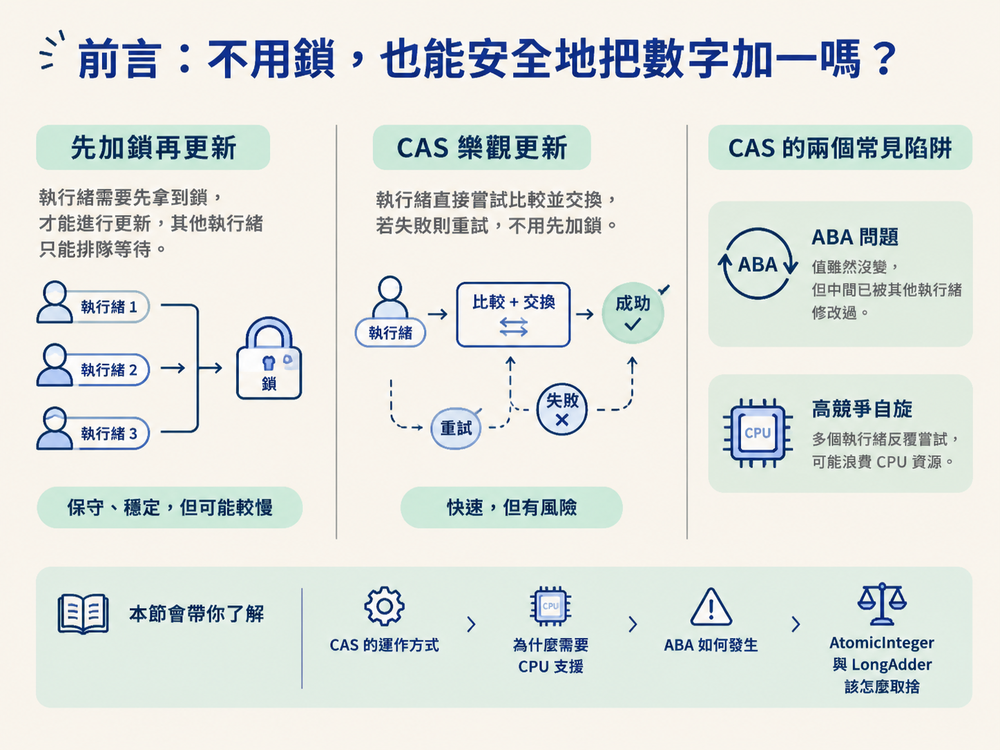
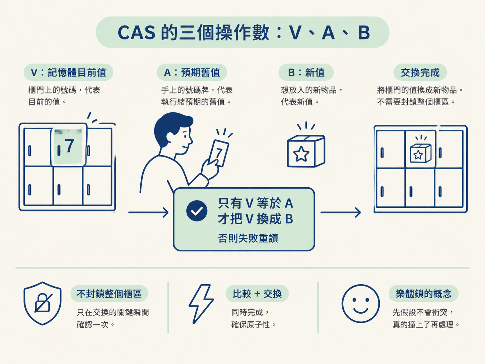
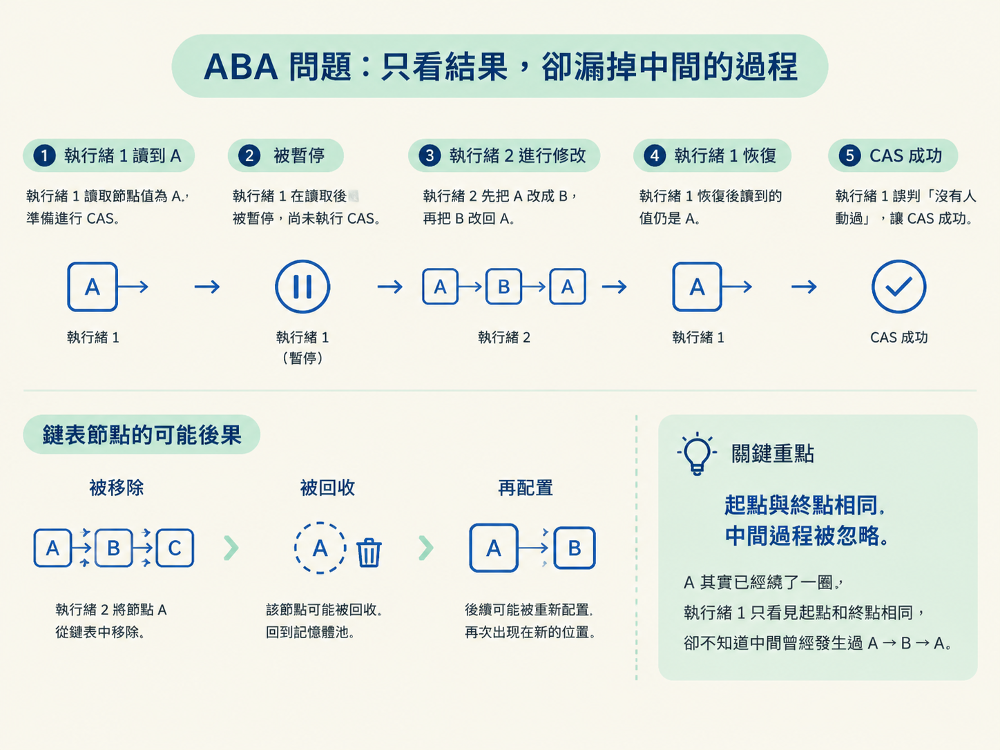
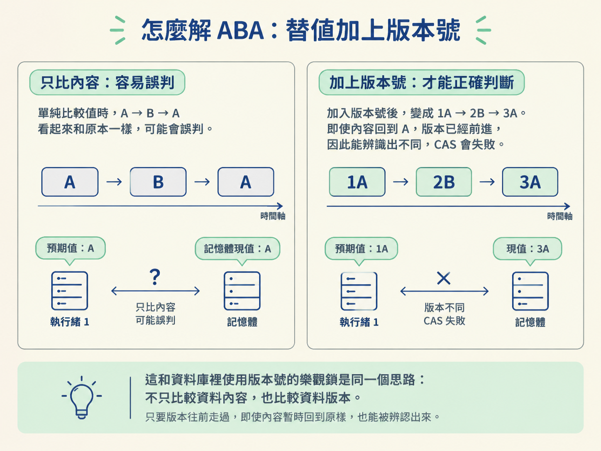
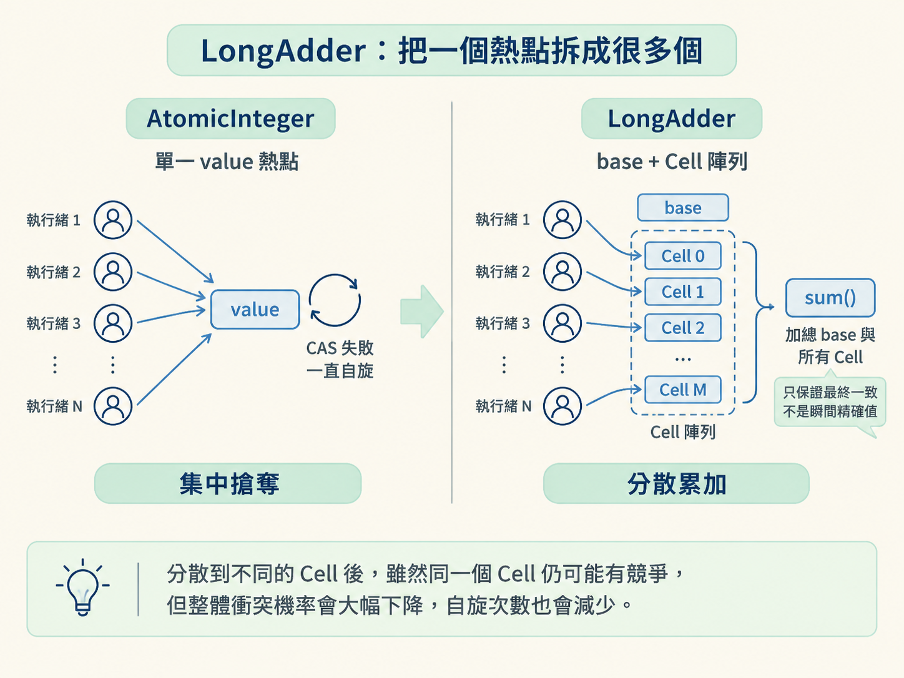

在多執行緒程式裡，大家同時更新同一個變數時，很容易出現競爭。前面談過的 synchronized、ReentrantLock，以及搭配 volatile 使用的記憶體屏障，都是比較保守的做法：先假設衝突一定會發生，再用鎖或屏障把它擋住。
這種方式可靠，但也有成本。執行緒可能需要排隊、掛起，之後再被喚醒；如果只是很短的一次更新，光是這些切換成本就可能比真正的業務操作還重。
那能不能先不鎖，直接嘗試更新？如果剛好沒人搶，就快速完成；如果有人搶先改過，再重新讀取、重試一次？這就是 CAS 的思路。它在低競爭時很快，支撐了 JUC 裡許多原子類別，但也有兩個常見陷阱：ABA 問題，以及高競爭時不斷自旋造成的 CPU 浪費。
這一節會把 CAS 的運作方式、它為什麼依賴 CPU 支援、ABA 如何發生，以及 AtomicInteger 和 LongAdder 該怎麼取捨串在一起。

學完後，你應該能講清楚 CAS 的三個操作數 V／A／B，以及底層 CPU 原子指令如何讓它完成比較與交換；也能說明失敗自旋的代價、ABA 問題與版本號解法。
此外，你還要能回答：為什麼 AtomicInteger 在高競爭下會變慢？LongAdder 又如何透過分段累加，把大家搶同一個熱點的情況拆開？
CAS 的全名是 Compare And Swap，也就是「比較並交換」。它不是先把整段程式碼鎖起來，而是先拿著自己讀到的舊值，向記憶體確認一次。
CAS 的規則很簡單：只有當目前的 V 等於預期的 A，才會把 V 更新成 B。如果 V 不等於 A，代表在這段時間裡，其他執行緒已經先改過資料。這次 CAS 就算失敗，執行緒通常會重新讀取最新值，再嘗試一次。
可以把它想成寄物櫃換物品。你手上有一張寫著 A 的號碼牌，想把櫃子裡的東西換成 B。管理員先確認櫃門上的號碼 V 是否仍然是 A；如果是，才允許你更換。如果不是，就表示有人先動過這個櫃子，你必須重新確認狀態。
這個過程不需要把整個寄物櫃區封起來，只要在交換的關鍵瞬間確認一次即可。這就是 CAS 比較像「樂觀鎖」的地方：先假設衝突不會發生，真的撞上了再處理。

CAS 能夠安全運作，關鍵在於「比較」和「交換」之間不能被其他執行緒插隊。這件事不是靠 Java 程式碼把兩個普通操作黏在一起，而是由硬體提供支援。
Java 的 CAS 依賴 Unsafe 類，最後會呼叫 CPU 提供的原子指令。例如在 x86 架構下，常見的是 cmpxchg。這類指令能在硬體層級完成比較與交換，讓中間不會被拆成兩個可被插入的步驟。
因為不需要依賴作業系統的互斥量，CAS 在低競爭時通常不用讓執行緒切換狀態，也不必經歷掛起與喚醒。因此，原子類別大量採用這種方式。
不過，「不用鎖」不代表「沒有成本」。CAS 失敗時，執行緒通常不會立刻睡眠，而是重新嘗試。競爭一高，重試本身就會變成新的負擔。
CAS 有一個容易被忽略的限制：它只檢查現在的值是否等於預期值，卻不知道這個值在中間是否曾經被改動過。這就是 ABA 問題。
假設執行緒 1 先讀到變數是 A，準備把它改成 C。但它還沒來得及執行 CAS，就被 CPU 暫停了。
接著，執行緒 2 進場，先把 A 改成 B，再把 B 改回 A。等執行緒 1 恢復執行時，記憶體裡的值看起來仍然是 A。它拿著預期值 A 去比較，CAS 會判定「沒有其他人動過」，於是成功把 A 改成 C。
問題是，A 其實已經繞了一圈。執行緒 1 只看見起點和終點相同，卻完全不知道中間曾經發生過 A → B → A。

ABA 是否真的造成問題，要看資料的意義。如果只是對一個整數做加減，中間短暫變成其他數字，最後又回到原值，通常不會影響後續結果。
但如果 CAS 操作的是鏈表或棧中的節點引用，事情就不同了。某個節點可能先被移除、回收，之後又配置了一個新節點，而新節點剛好使用相同的位址。CAS 看到引用仍然相同，就以為資料結構沒有變過；實際上，節點的身分和整個結構可能早已不同。
這時候，原本看似正確的指標可能指向錯誤的節點，進一步讓鏈表或棧的結構損壞。也就是說，ABA 的危險不在於「值回到原樣」本身，而在於程式把「曾經變過又變回來」誤認成「從頭到尾都沒變」。
既然單看值無法分辨「從未改變」和「改過幾次又回來」，解法就是讓比較內容多帶一個會變動的記號。常見做法是加上版本號或時間戳。
原本的變化可能是：
A → B → A
加上版本號後，會變成：
1A → 2B → 3A
執行緒 1 手上的預期值是 1A。等它恢復時，記憶體裡雖然又是 A，但版本已經變成 3。兩者不再相等，因此 CAS 會失敗，執行緒不會把已經變過的資料誤當成原來的狀態。
這和資料庫裡使用版本號的樂觀鎖是同一個思路：不只比較資料內容，也比較資料版本。只要版本往前走過，即使內容暫時回到原樣，也能被辨認出來。

AtomicInteger 為什麼在高競爭下變慢？CAS 在低競爭時很有效率，但 AtomicInteger 在競爭非常激烈時，效能可能反而下降。原因不是 CAS 失去原子性，而是所有執行緒都在搶同一個更新位置。
AtomicInteger 內部主要維護一個 value 變數。假設有 N 條執行緒同時對它進行 CAS，在同一個時刻通常只有一條能夠成功，剩下的 N - 1 條都會失敗。
失敗的執行緒通常不會直接掛起，而是在 do-while 迴圈裡重新讀值、重新計算，再進行下一次 CAS。競爭越激烈，失敗率越高，重試次數也越多。CPU 會把大量時間花在自旋與重試上，真正的業務工作反而沒有增加。
這就是熱點競爭：就像很多人同時搶同一把椅子，大家的力氣都花在爭搶上，沒有更多人因此坐下。當執行緒數量持續增加，單一 value 就會成為瓶頸。
LongAdder：把一個熱點拆成很多個JDK 8 引入的 LongAdder，主要用來處理高併發下的寫入計數。它的核心想法是分治，也就是用更多空間換取更少的衝突。
LongAdder 內部維護一個 Cell[] 陣列。競爭不激烈時，它可以直接更新 base 變數，行為和 AtomicInteger 類似。
一旦發生競爭、CAS 失敗，它不會繼續讓所有執行緒死磕同一個 base。執行緒會根據自身的雜湊值，被分散到 Cell[] 中的某個格子，改為在那個格子上進行 CAS。
原本的情況是 N 條執行緒搶同一個變數；拆開後，執行緒會分散到不同的 Cell。雖然同一個 Cell 裡仍可能發生競爭，但整體衝突機率會大幅下降，自旋次數也跟著減少。

需要取得總數時，再呼叫 sum()。它會把 base 和所有 Cell 的值加總起來。這種設計把更新時的競爭成本降下來，但也帶來一個重要取捨：讀取不再是單一位置的即時精確值。
| 比較面向 | AtomicInteger | LongAdder |
|---|---|---|
| 內部結構 | 單一 value 變數 | base 加上 Cell 陣列 |
| 高競爭寫入 | 所有執行緒搶同一個位置，自旋較嚴重 | 分散到多個格子，衝突較少 |
| 讀取結果 | get() 取得即時精確值 | sum() 取得累加結果，屬於最終一致 |
| 適用場景 | 競爭不激烈，或需要精確即時值 | 高併發計數，且對即時精度要求較低 |
AtomicInteger 的優勢，是 get() 能取得當下單一原子變數的精確值。如果你的程式需要根據「此刻到底是多少」做出判斷，就不能只看吞吐量。
LongAdder 的優勢，則是把大量更新分散開來。呼叫 sum() 時，如果其他執行緒仍在同時更新，計算過程中可能讀到不同時間點的各個 Cell，因此結果只保證最終會收斂到正確的累加值，而不一定是某一個瞬間的絕對精確值。
所以，這不是單純的誰取代誰，而是兩種需求的選擇：要即時、精確的單一數值，就偏向 AtomicInteger；要承受大量並發更新，而且允許讀取結果存在短暫差異，就偏向 LongAdder。
CAS 是一種樂觀的無鎖更新方式，使用 V、A、B 三個操作數確認「目前值是否仍等於預期舊值」，相等才交換成新值，失敗後再自旋重試。它依靠Unsafe與 CPU 提供的cmpxchg等原子指令，確保比較與交換不會被插隊。由於 CAS 只檢查結果、不追蹤中間過程，因此可能發生 ABA 問題；單純數值運算通常不受影響，但鏈表或棧等涉及節點引用的結構可能因此損壞，常見解法是加入版本號。AtomicInteger把所有更新集中在單一value，高競爭時容易因大量自旋而降低吞吐；LongAdder則透過base與Cell陣列分段累加來分散熱點，代價是sum()不保證取得某個瞬間的即時精確值。
從鎖、JMM 與 volatile，一路走到 CAS，你可以看到同一個問題有不同層次的解法：先用互斥避免同時進入，再用記憶體模型確保看得見彼此的更新，最後在適合的場景裡用硬體支援的無鎖操作換取效能。
CAS 不是「比鎖更高級」的答案，而是另一種取捨。低競爭時，它能用很小的成本完成原子更新；遇到 ABA 或高競爭時，就必須靠版本號、分段累加等設計補上它看不見的部分。把這些關係串起來，才真正能說明 JUC 為什麼選擇不同的原子工具。
接著可以用 DCL、生產者消費者、交替列印等題目，把這些機制實際寫出來。當你能從執行緒的讀寫、CAS 失敗，到版本號或分段累加的選擇一路說清楚，多執行緒問題就不再只是背誦 API。